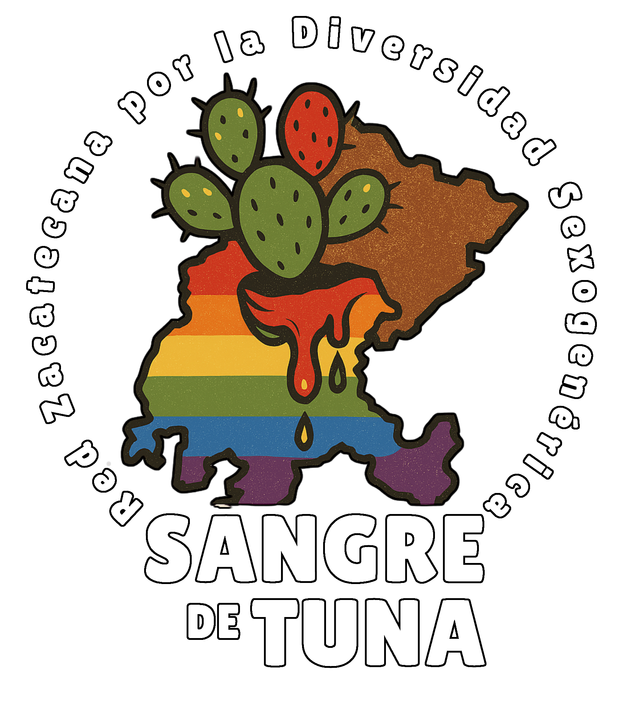
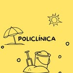
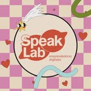

Gracias por sumar tu voz
En Pelando la Tuna creemos en el poder de extender raices, aquí celebramos y reconocemos a quienes caminan con nosotres en esta lucha por visibilidad, justicia y libertad para las cuerpas diversas
Colectivos aliados
 Sangre de Tuna - Somos un espacio para personas sexodiversas de Zacatecas
Organizaciones aliadas
 La Policlínica - Un espacio interactivo que promueve la creación de comunidad y el acercamiento entre la sociedad y la cultura mediante la colaboración • Sede en Zacatecas Mx • Creado en 2021 •
 Speak Lab Mx - 🧪 Somos un laboratorio creativo 💡
💭Apoyamos la diversidad, el emprendimiento, el talento y los eventos comunitarios
¿Tu colectivo u organizacion quiere aparecer aquí?
Si formas parte de un colectivo, espacio artístico o iniciativa que desea apoyar o colaborar con Pelando la Tuna, escríbenos por redes o mándanos un correo ¡Siempre hay lugar para más tunas en la penca!